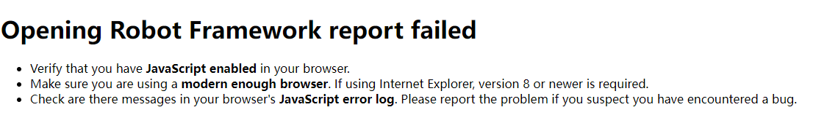

本文介绍Jenkins如何集成Robot Framework。
所用环境如下：
- Jenkins 2.326，使用docker安装部署
- 代理机：Windows10，安装Java环境、Robot Framework测试框架，用于执行自动化测试用例。
下面介绍具体部署流程。
一、代理机配置Java环境
启动代理节点时需要使用Java命令，所以需要配置Java环境。
1. 下载安装JDK
JDK下载地址：https://www.oracle.com/java/technologies/downloads/#java8-windows
下载完成后安装
2. 配置环境变量
新建系统变量 JAVA_HOME，变量值：C:\Program Files\Java\jdk1.8.0_311
新建系统变量classpath， 变量值：.;%JAVA_HOME%\lib;%JAVA_HOME%\lib\tools.jar
编辑系统变量Path，新增 %JAVA_HOME%\bin;%JAVA_HOME%\jre\bin;
查看是否配置成功：java -version1
2
3
4$ java -version
java version "1.8.0_311"
Java(TM) SE Runtime Environment (build 1.8.0_311-b11)
Java HotSpot(TM) 64-Bit Server VM (build 25.311-b11, mixed mode)
二、添加并启动windows slave
打开jenkins平台。
进入【系统管理】 -> 【节点管理】进行新增节点
windows节点配置、启动方法参考持续集成平台Jenkins详细介绍
三、安装Robot Framework 插件
Robot Framework plugin用于在Jenkins中收集和发布Robot Framework的测试结果，下面介绍两种安装方法。
方法1：到【插件管理】页面搜索Robot Framework plugin进行安装下载。
方法2：如果Jenkins无法连接网络，可以先到可以上网的电脑上下载对应的hpi格式插件后上传。Robot Framework plugin下载地址：https://plugins.jenkins.io/robot/#releases，选择相应版本，下载完成后进入【插件管理】，点击【高级】，到【上传插件】栏进行插件上传安装。
四、邮件配置
先安装插件Email Extension Plugin 和 Email Extension Template Plugin。
进入【系统管理】-> 【配置】页面，设置系统管理员地址：

下拉找到【Extended E-mail Notification】进行配置。
配置邮件内容模板
如果要查看邮件发送的日志可以勾选Enable Debug Mode，邮件配置没问题后再关掉它：

这里也可以设置默认触发方式，这是一个全局的设置，点击Default Triggers

进入【邮件通知】，配置方法和前面一样，配置完成后测试一下邮件是否能够发送成功。

如果是内网环境，需要确保Jenkins服务器能够与邮件服务器通信。
五、创建项目
介绍两种项目创建方法。
方法1：创建自由风格项目
构建配置
新建自由风格项目，设置项目运行的代理节点，标签为前面添加windows slave时指定的标签。

我这里不设置源码管理和触发器，手动进行构建。
添加构建步骤，选择windows bat脚本。

通过标签 login 来执行下面的robot framework测试用例：

robot命令：
1 | robot -d D:\ProgramWorkspace\DevTest-Notes\CI\jenkins\rf_results --include=login D:\ProgramWorkspace\DevTest-Notes\RobotFramework\PO_demo |
在输入框中输入执行robot framework用例的robot命令：

配置RF测试报告
接下来添加构建后操作步骤，首先添加【Publish Robot Framework test results】配置RF测试报告。
指定报告生成位置及结果阈值

配置邮件提醒
添加邮件提醒

构建
点击构建，执行完成后可以看到RF报告：

点击report.html查看详细日志，可能会报错：Opening Robot Framework report failed

解决方案：https://stackoverflow.com/questions/36607394/error-opening-robot-framework-log-failed
进入【Manage Jenkins】，点击【Script Console】，在输入框中输入如下命令并点击【Run】：
1 | System.setProperty("hudson.model.DirectoryBrowserSupport.CSP","sandbox allow-scripts; default-src 'none'; img-src 'self' data: ; style-src 'self' 'unsafe-inline' data: ; script-src 'self' 'unsafe-inline' 'unsafe-eval' ;") |
执行完后就可以成功打开日志报告了。
如果重启了Jenkins，使用这种方式配置会丢失，又要重新运行一下上面的命令。
第二种方法是修改Jenkins容器中的 /usr/local/bin/jenkins.sh 文件，这样可以永久生效：
编辑 jenkins.sh 文件，将以下命令添加到exec java 开头的那行命令中：
1 | -Dhudson.model.DirectoryBrowserSupport.CSP="sandbox allow-scripts; default-src 'none'; img-src 'self' data: ; style-src 'self' 'unsafe-inline' data: ; script-src 'self' 'unsafe-inline' 'unsafe-eval' ;" |
如果Jenkins容器没有vi或者vim命令，可以将文件复制出来修改后，再复制回去：
1 | $ docker cp jenkins:/usr/local/bin/jenkins.sh . #复制到当前目录 |
修改完成后重启Jenkins：
1 | $ docker restart jenkins |
方法2：创建流水线项目
下面介绍第2种方法，新建一个流水线项目。
和方法1一样，我这里不设置源码管理和触发器，通过手动构建的方式触发。
Pipeline
Pipeline script的编写非常重要，主要由它来进行测试流程的控制，要执行测试脚本的代理机也在pipeline中指定。
Jenkinsfile支持两种语法形式：
- Declarative pipeline - v2.5之后引入，采用结构化的方式。
- Scripts pipeline - 基于groovy的语法。
本文使用Declarative pipeline编写。
下面的脚本主要实现以下功能：
- 指定代理节点
- 下发构建脚本命令
- 添加构建后RF报告
- 添加邮件提醒
1 | pipeline { |
保存。
构建
手动点击【Build Now】，结果和自由风格项目类似。
jenkins平台会保存每一次构建的测试报告。
不是风动，不是幡动，仁者心动。——六祖慧能
本文标题:Jenkins集成Robot Framework
文章作者:hiyo
文章链接:https://hiyongz.github.io/posts/continuous-integration-jenkins-plugin-for-robotframework/
许可协议:本博客文章除特别声明外，均采用CC BY-NC-ND 4.0 许可协议。转载请保留原文链接及作者。